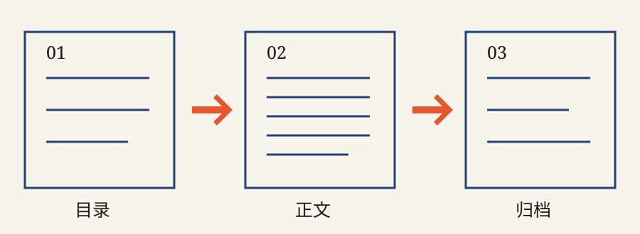

阅读说明
无需注册或开启 JavaScript，即可阅读本站全部文章。下面三步从目录找到文章，再回到相关记录。

第一步 · 从目录开始
首页按日期倒序排列。点击标题进入文章；左侧缩略图与文章顶部封面来自同一张双色 SVG 图形。想看较早的记录，可进入归档。
第二步 · 阅读正文
文章页显示日期、类别及正文。桌面宽屏右侧的小数字是段落编号，方便指出具体句子；手机会隐藏这条窄栏。正文首字放大下沉，不影响文字复制或阅读。
第三步 · 继续查找或订阅
点击文末标签可查看同主题文章；上一篇、下一篇可按时间继续阅读。将RSS 地址加入你使用的订阅阅读器，可由阅读器检查后续更新。评论尚未开放，纠错请走联系页面。
三个典型场景
- 想看最近发生的事：打开首页，选列表第一篇。
- 想找一次自动化排障：从文章的「自动化」标签进入主题列表，或按归档日期定位。
- 想指出某段有误：复制文章地址，记下桌面段落编号，在联系入口说明需要核对的内容。